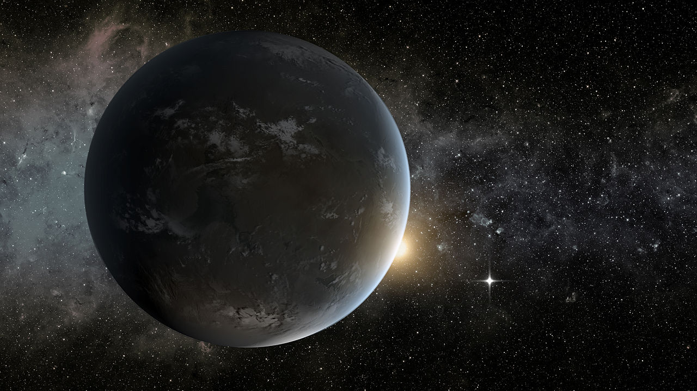

梦与新世界

这是一篇关于费米悖论的一种解释的故事。本文在写作过程中，使用了 David Brin 的 Great Silence 的论文中提到的对费米悖论的其中一种解释：因为我们的探测方式不对。
旧世界
这是一间很狭窄的屋子，仅有的一扇窗装在很高的地方，踮起脚都无法碰到。我躺在床上，可以隐约看到窗台上有一只猫，想是它流浪久了，过来跟我打个招呼，顺便骗点吃的。我显然不愚蠢，不可能上猫的当。
其实我根本就无法在床上坐起来，脑袋沉重的像要窒息一样。我挪动了一下身子，把脸转向天花板，看到天花板上有一只蜘蛛快速的爬过。这张天花板开始慢慢的离我远去，我连同这小小的床也像缩水一样越来越小，直到这房间变得像太空一样巨大却空无一物。
手机屏幕亮起来，呼吸灯一闪一闪，我强忍着像是鞭刑一样的痛苦挪动了一下身子，终于瞥见屏幕上的名字，它变幻着颜色，不停地闪烁着，可是我却连挣扎一下去接通的想法都没有。
醒来的时候，阳光恰好从那扇高高在上的窗子里面透进来，我终于可以从床上坐起来，发烧已经好了。手伸向手机，才发现电池没有电了，我甚至都无从知道现在的时间，看样子应该是快到中午。我拖着病痛往厨房走，希望能找点现成的吃的，却发现门缝下面一堆杂乱的满是数字和图表的纸，显然是有人一张一张从门缝下面塞进来的。
这时候在充电基座上的手机响了起来。多年之后，我回想起来，如果要找出一生中最悲痛的一通电话，那无疑是今天的这次。我手中拿着电话，屋里的一切像是消失在水雾之中，阳光照进来的地方，有彩虹在扭来扭去。
梦与萌芽
在我的想象中，蓝熊猫的世界一定是最美丽的。从五年前我父亲对这颗行星的第一次光谱分析，到现在为止我们已经积累了大量的资料。这五年以来，蓝熊猫一直是最受关注的一颗太阳系外行星，它也是我梦想中的天堂。
五年前的光谱已经表明这颗行星上存在文明，然而这些光谱数据能够公之于众，至少埋葬了我的父母这两条生命。我带着从门缝塞进来的数据偷偷离开那个地方，来到了南半球，按照那天父亲最后的电话指示，将他尚未来得及上传的这部分数据公开。
蓝熊猫的大气中有着明显的工业文明的痕迹，化石燃料正在被大量使用，而且通过大气环流模型的模拟，化石燃料的使用集中在八到十个大型地区。光谱也显示当地居民很可能在使用飞行器。1
我的学生敲门进来，问我明天的仪器例行检修要不要取消，因为今天的数据有些奇怪，是不是要继续采集。Peter 不是一个非常聪明的学生，但是由他来管理仪器，甚至比我自己上手都要放心的多。
我们上周刚刚更换了部分线路，为数据服务器安装了新的电磁屏蔽。今天的数据中有一段高频上的波动，确实是应该推迟检修的。我告诉 Peter 回去休息，自己来盯仪器。这个观测站距离最近的小镇也有两个小时的车程，我不想让 Peter 开车走夜路。
微风吹过，木制的百叶窗哗哗作响，隐约能听到窗台下松鼠跑过的声音。窗外夕阳显得苍白，阳光却依然刺眼。一阵风吹过沙尘，有那么一颗小小的尘埃偏偏冲进我的眼球和眼睑之间。眼前的百叶窗模糊起来，躺在地板上，周围一切显得那么高达，我像是回到了五年前那间狭窄的卧室。
我所痛恨的事物中，人无疑是位居第一的，然而我所爱的事物中，人也会排在首位。那天我接到父亲的电话，我能听出他在开车，周围还有吓人的警笛的声音。我清楚的记得他叮嘱我藏好那些门缝下的文件，他说他不能来见我，他说我妈已经不在了，他说我一定要离开这里。我说我知道了，我知道了，我知道了。
那些在门后散了一地的文件，被我一把一把的塞进书包里。那一年我十九岁，我甚至都不知道有没有弄丢什么，就被父亲安排好的人送出了这个城市，然后离开了这个小小的中东国家。
这五年我完成了学业，在这个不出名的学校找到一份教职，然后走上了跟父亲同样的研究道路。五年前的数据曝光之后，很多人都跟进了这项研究，进展已经非常大，一年以来我们在调试自己的仪器，而四个月前才刚刚开始产生能用的数据。
我拿了数据平板终端，端详着这个奇怪的高频小高坡。莫非我们的电磁屏蔽不够好？不像是。
这时有个念头突然闪过我的脑海：五年前的数据。
危机
外面街上的人吵得不得了，看来这事情是藏不住了。
涵海板着脸在屋里走来走去，嘴里一直嘟囔着。瘫坐在沙发里的我被他这样搅和的心烦气躁，想一把把他按在沙发上。他忽然转过身，眉头还是皱着，语调却十分坚定：“我是绝对不会辞职的，我是你生的，但是我的生活是我自己的。”
三十年了，我早就离开了风口浪尖。如果是三十年前，我绝不会反对涵海参与这些地外文明项目，那会儿我自己也还会守在观测站。假如我没有注意到数据上的那些周期性，事情也不会这么快发展到各种政治力量介入的地步，涵海也还可以去做单纯的科研。
事到如今，我也不好再说什么。上周政府跟蓝熊猫的秘密社会科学项目被曝光，在那之前，我都无从知道涵海居然在做这种工作。而街上的人群显然对于这种联合地外文明来研究新的统治手段的事情出离愤怒了。
“可是你无论如何不能成为政治工具！作为你的父母，我们这是为你着想。”
“你们不明白，我做这些研究可以让我们的世界变得更好，可以让每个人都变得安心。”
“你这是要做狗腿子！这简直是对你这么多年所学来的科学的玷污！”
“玷污，玷污，你说这是玷污。好，三十年前，是谁发现了蓝熊猫发来的信息，是谁第一个提出地球-蓝熊猫联合科学，当年又是谁放弃了物理转去做社科研究。我们走到今天，还不是拜你所赐。如果我现在退出，是，我会有个安稳的工作，我会安安稳稳地度过一生。可是如今我有机会带领大家的研究走上和平的道路，去从内部阻止那些尝试利用这些研究独裁的人，我为什么要退出。你要是不满，你可以像外面那些人一样，去反对去阻止，但是你没有权利利用我们的父子关系来对我说教！”
涵海抓了自己的包，没再说话，直接离开了家。
这么多年来，我始终不能忘怀自己年轻气盛所做的错事。有些东西碎了就是碎了，再怎么掩饰也于事无补。回想那一天，我双手颤抖着从文件柜扯出来的数据，那些还是我父母用命换来的。我对照着数据记录的日期，那个日子，恰好是蓝熊猫上春分日，而我的数据，也是蓝熊猫的春分日。往来复去，那之间间隔了四个蓝熊猫年。高频信号增加恰好是在春分日，这很可能说明蓝熊猫上的文明在进行这某些发射电磁波的活动，而且他们的历法，跟蓝熊猫的公转周期有关。或者这是自然现象。当然之后的观测证实了这些高频冗余便是他们发来的信息。然后我越走越远，放弃了物理，投身社会科学。
新世界
确认了蓝熊猫的信息之后，在地球轨道的上方，我们发现了他们建造的超距通信管道的端口。后来的研究证实这就是修改过的 Krasnikov 管道2，可以用来超距通信，但是双方都没有足够的功率来传送大的物件。之后是专门的研究小组翻译了对方的语言，再之后便是涵海参与的政治合作项目。如今涵海已经成为政治运动的牺牲品，但是他兑现了诺言，我们两个行星之间的大众也开始相互沟通。通过蓝熊猫，我们有了更多的聊天的伙伴。
许多网站开始提供行星间邮件服务，经过翻译程序翻译为对方可读的语言，然后通过修改的 Krasnikov 管道投递给其他行星上的特定的账号。我成立的涵海星际邮件便是其中之一。3我们所认识的银河，已然从原来过分的寂静，变得有些吵闹。生命之间，像是正在举行一场跨越星系的聚会。虽然我们无法飞跃茫茫太空，抵达对方的行星，但是我们知道自己并不孤单。4
在几十年前，那时候尚未有任何地外文明的迹象，SETI 举办过了一场 SETIcon 会议，会议上曾经有人说过：或许在广袤的宇宙中，有一张通信的大网，他们在不断的相互交流，可是我们却不是这个网的一部分，因为我们还没有学会如何去聆听。
走在深夜的街道，周围很安静，我抬头看着漫天的繁星，在那些星星点点之间，似乎有张巨网在广袤的太空中无限蔓延，巨网的每个端点，都是一个文明。
银河在上，生命并不孤独。
- 在后来的星际移民中心分类法中，蓝熊猫被归类为 A+ 行星，而存放在火星的档案中，这些化石燃料污染严重区域的命名使用了中国上古神话中的人物来命名，十个地区从大到小，分别为女娲、伏羲、蚩尤、遂人、有巢、葛天、瑶姬、洛神、刑天和许由。 ↩
- 这是一种通过修改时空本身来进行远距离传送的管道，蓝熊猫所使用的技术，跟我们地球上的 Krasnikov 管道的原理很相似，所以称作修改的 Krasnikov 管道，或者 M Krasnikov 管道。一旦建成，管道便可以一直稳定存在。 ↩
- 为了纪念我过早去世的儿子。 ↩
- 所谓费米悖论至少在太阳系周围得到了很好的解释：大家都没有发展出能够将大型飞船飞到其他星系的能力，但是大家依然能够建立通信网，而修改的 Krasnikov 管道建立之前，地球上的人类并不能加入到这样的通信之中。当然，现在大家认识到，这已经不是悖论了。 ↩

最近评论